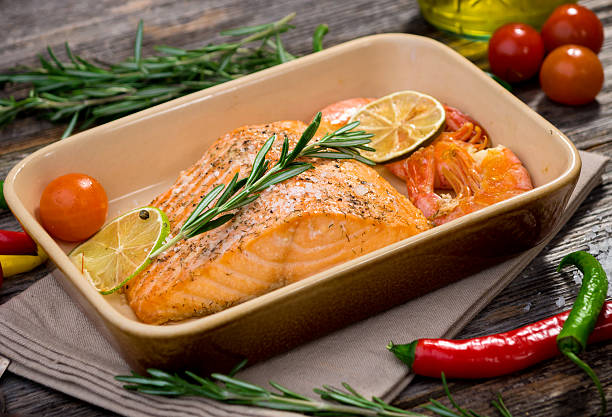

How To Make Baked Salmon

Whether it's for that special someone or a nice night with the family, this baked salmon is sure to impress!
Ingredients You'll NEED
Keep in mind, these ingredients blend together in a variety of measurements that are truly up to you. Experiment and find your preference!
- Fresh Atlantic Sockey Salmon w/ Skin
- Old Bay, Blackened, or Cajun Seasoning
- Garlic Clove
- Flaky Salt
- Avocado Oil
- Stainless Steel, Carbon Steel, or Cast Iron Skillet for best results
Steps:
- Preheat oven to 400 farenheit
- Preheat skillet with avocado oil on high heat
- Cut fresh clove of garlic
- Rub/Apply salt to the skin side
- On the exposed side, apply the old bay, blackened, or cajun seasonings.
- Once skillet is smoking, place seasoned salmon skinside down
- Wait a few minutes while the skin fries
- Once the skin is golden brown or to your liking, turn the stove off, and place the salmon in the oven for an additional 7 minutes.
- Remove from the oven, confirm that salmon is cooked internally, let cool, and enjoy!